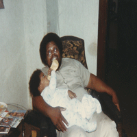

A Tribute To
Pastor James J Brown Jr
A Brief Biography
James' Early Years
James J Brown Jr, known by family and friends as "Tie," was born on May 27, 1949 at University Hospital in Omaha, NE. His father, James Sr,
was employed at the old Storz Brewery, while his mother, Alice, worked for Metropolitan Utilities
District. James held his father in high regard and aspired to follow in his footsteps to become a
minister. As a kid, he would walk around his neighborhood with a bible in hand, attempting to "preach
the word" to the other kids, whom as he mentioned, were not amused.
During his latter teenage years,
James discovered the pastime of drag racing. His car of choice was a 1967 Chevy Super Bee that could
reach a max speed of 170 miles per hour.
He won so many races that his friend, Marty, started calling him "Super Bee," or just "Bee," which
also coincided with his last name. One of those races attracted the attention of the local police
and ended with James locked up in the city jail. Too scared to call his father, he reached out to an
uncle who bailed him out and didn't tell his parents.
Politics & Education
James went on to graduate from Omaha North High School and attend college at the University of Nebraska at Omaha (UNO). Unfortunately, the only class he says that he excelled in was Bid Whist. Bid Whist was one of his all-time favorite card games and he spent more time in the student area playing the game than he did in class. His time in college was during the height of the Civil Rights Movement and prior to the passing of the Civil Rights Act. James was very much into the movement and was interviewed , along with other students, by the Omaha World-Herald when Dr. Martin Luther King Jr was assassinated. It was also James' desire to join the Black Panther Party for Self-Defense. His cousin, Edward Poindexter, along with his friend, Mondo we Langa (formerly David Rice), were prominent figures within Omaha's chapter of the Black Panthers, and leaders of another group they formed called the National Committee to Combat Fascism (NCCF). Both men were convicted in the early 1970's for the murder of Omaha Police officer Larry Minard, for
which they were framed. Edward was James' older cousin, and although they hung out together, Edward
would not let James join the Panthers. He used to tell him, "Aunt Alice would kill me if something
happened to you!"**
Both men were convicted in the early 1970's for the murder of Omaha Police officer Larry Minard, for
which they were framed. Edward was James' older cousin, and although they hung out together, Edward
would not let James join the Panthers. He used to tell him, "Aunt Alice would kill me if something
happened to you!"**
**For more information on Mondo and Ed, please visit the following sites:
A Timeline and detailed articles
FreeEdwardPoindexter.com
First Love
It was also in the early 70's that James married his first love interest, who was a young woman that lived on the next block named Patricia Hoof. From this union came a baby boy, James J Brown III, in 1971, named after his father and grandfather. Unfortunately, their marriage would be short-lived, as James and Patricia were divorced in 1975.
Many Talents

After his stint in college, James went on to hold several different jobs throughout his life. One of his
earliest jobs was what he called "lugging beef" at one of the many packing houses that existed in south
Omaha at the time. In those days, the packing houses were a source of employment for working-class men.
James ended up being fired and black-balled from working at the packing houses for expressing his political
views on the job.
From there, he went on to earn a class
B Commercial Drivers License and started working for Omaha Public Schools Transportation as a bus driver.
And although he didn't finish college, his training in psychology helped him land a position as a Resident
Manager with ENCOR (Eastern Nebraska Community Office of Retardation), now called DUET. So, from the mid-70's into the late 80's, he drove school bus during the
day, and
managed houses of special-needs children and adults at night. Prior to holding these jobs, James
had also become a certified tax preparer, so he would always make extra money preparing taxes for family and
friends.
It was also during this period that James discovered his second chance at love with a woman named Dorothy Mae
Wright, who was a long-time member of his father's church. After a lengthy courtship, James and Dorothy were
joined in marriage in the summer of 1986. They didn't produce any children together, but became a combined
family, including James' son, James III, and Dorothy's two sons, Clifford and Herbert. James and Dorothy would
go on to spend the next 30 years as a happy couple. And due to the amount of extended family, James and Dorothy
would go on to start an every-other-year tradition of renting out a local venue to hold a large Thanksgiving
dinner.
Service To Others
After leaving those jobs, Pastor Brown went on to work for the 7-Eleven stores and eventually became the area manager over the north Omaha locations. It was during this time that James connected with many of north Omaha's youth in an effort to guide young men toward the right direction. After years with 7-Eleven, Mr. Brown become a youth counselor at the original north branch location of the YMCA Community Center, and toward the end of the 90's, he utilized his class B CDL to drive trucks for Deffenbaugh and Waste Management. Did I mention that Mr. Brown was also licensed to sell life insurance? A man of so many talents causes one to wonder if any of these were his passion, or if they were just jobs to make ends meet until fulfilling a dream?The Passion Of James

Regardless to the various skill sets that James possessed, he took the most pride in his ability to cook and bake. Whereas most people credit their mother or grandmother for passing down cooking skills, James gives that credit to a woman named Sarah Evans. The late Mrs. Evans was a master cook in the kitchen and she passed on her knowledge of cooking and the delicate art of baking to James. He went on to perfect those skills to the point of confidently bragging about them, and if put to the test, he would show you better than he could tell you! There were many people who loved his food, but they really went crazy over his baked goods. The holiday season was his busiest time, as he would have to fill many orders for his chocolate chip cookies (with secret ingredients), chocolate-covered peanut clusters, and his fluffy, yet decadent, three-tiered, german chocolate cake. James' ultimate goal was to own his own restaurant, but until then, he would proceed with starting a catering business.